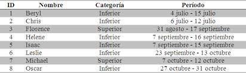
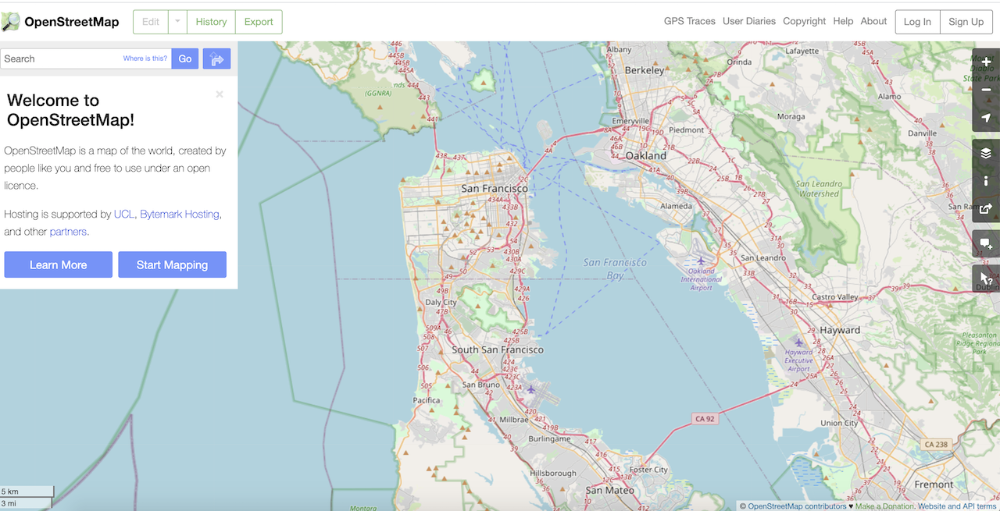
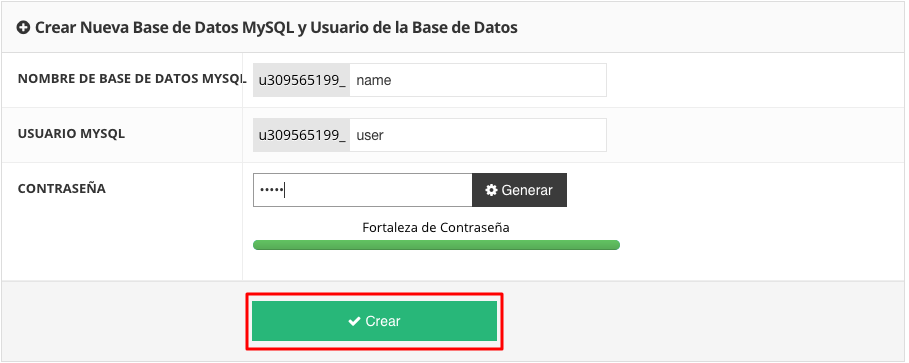

| Nombre | Descripción | Imagen |
|---|---|---|
| Personal site | Sitio web que contiene información de una persona, además de poder darle sugerencia. |
|
| Calculadora C# | Aplicación que permite calcular operaciones básicas de matemáticas. Hecho del lenguaje C#. |
|
| Sitio web de Huracanes | Sitio web que contiene información sobre cada huracán que aparecio en República Dominicana, además de poder darle sugerencia. |
 |
| OpenStreetMap | Aplicación que permitia calcular la distancia de un punto a otro mediante la ciudad Santo Domingo. Hecho con el lenguaje Python. |
 |
| Base de datos en un sitio web | Sitio web que permitía administrar las base de datos MySql, hecho del lenguaje PHP |
 |